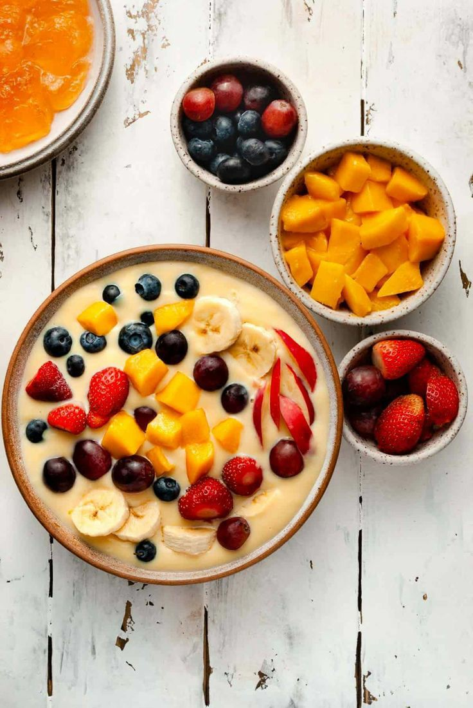

Fruit Custard Recipe..
A creamy and delicious dessert, perfect for any occasion.
Preparation Time
- Prep: 15 minutes
- Cooking: 30 minutes
Ingredients
For the Custard
- 1 liter milk
- 100g sugar
- 4 egg yolks
- 2 tablespoons cornstarch
- 1 teaspoon vanilla extract
For the Fruit Topping
- Assorted fresh fruits (strawberries, blueberries, raspberries, etc.)
- 1 tablespoon sugar
- 1 teaspoon lemon juice
Instructions
- Prepare the Custard:
- Heat the milk in a saucepan over medium heat until it starts to simmer.
- In a separate bowl, whisk together the egg yolks, sugar, cornstarch, and vanilla extract until smooth.
- Slowly pour the hot milk into the egg mixture, whisking constantly.
- Return the mixture to the saucepan and cook over low heat, stirring constantly, until the custard thickens.
- Remove from heat and strain the custard to remove any lumps.
- Prepare the Fruit Topping:
- In a bowl, combine the fresh fruits, sugar, and lemon juice.
- Toss gently to coat the fruits.
- Assemble the Dessert:
- Pour the custard into individual serving bowls.
- Top each serving with a generous amount of the fruit mixture.
- Serve Chilled:
- Chill the dessert in the refrigerator for at least 2 hours before serving.
Nutrition
| Calories | 200 kcal per serving |
|---|
| Protein | 5g |
|---|
| Carbs | 25g |
|---|
| Fat | 10g |
|---|